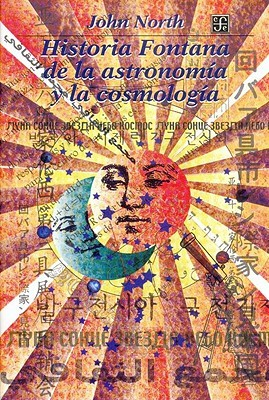

Historia Fontana de la astronomía y la cosmología (Spanish Edition)
Reseña por Jorge I. Zuluaga

Ver reseña en GoodReads (necesita cuenta)
Es difícil encontrar en un solo libro, tratado casi con igual esmero y casi hasta el último detalle, por ejemplo, el desarrollo de la astronomía en la antigüedad, tanto en la América precolombina como en el Lejano y el Medio Oriente, y la astronomía nueva de los tiempos de Copérnico, Kepler y Galileo.
Confieso que, a pesar de ser un astrónomo curioso, incluso uno muy interesado en la historia de la ciencia, me costó leer los primeros 10 capítulos que cubren los primeros 4.000 años de historia de esta antigua ciencia. La mayor parte del esfuerzo al leer estos capítulos (que constituyen casi el 50 % del libro) se destina a intentar recordar nombres de personajes perdidos en la neblina de la historia (babilonios, egipcios, persas o árabes) y modelos del mundo de los que apenas hemos oído hablar. El esfuerzo, sin embargo, rinde sus frutos a largo plazo cuando, en los capítulos más apasionantes de la historia de la astronomía (los que se desarrollaron después de 1500), se logra reconocer la importancia de esos personajes y hechos para entender los eventos mejor conocidos y recordados de la historia de la astronomía. No dejen de leer esos primeros 10 capítulos.
Para mí, uno de los aspectos más gratos de la lectura fue el «descubrir» la verdadera extensión y dimensión de los aportes e ideas de personajes de los que apenas si se escuchan algunas referencias trilladas: Aristarco de Samos (de cuyas ideas sabemos principalmente por Arquímedes y que, entre otras cosas, sostenía que la Tierra se movía y las estrellas estaban muy lejos de nosotros), Hiparco de Nicea (descubridor de la precesión de los equinoccios y laborioso catalogador de estrellas), el grandioso Tolomeo de Alejandría (compilador de los conocimientos astronómicos de los dos milenios que lo precedieron), Al-Juarismi (al que recordamos por la palabra algoritmo y su tratado sobre álgebra, pero que en realidad fue un gran astrónomo árabe que elaboró una de las más importantes tablas planetarias de su época), Edmund Halley (uno de los astrónomos más originales de su tiempo y autor de la que hoy llamamos comúnmente «paradoja de Olbers»), Caroline Herschel (hermana poco recordada de William Herschel y que lo igualó en descubrimientos), Leonhard Euler (que ganó varias ediciones consecutivas de concursos organizados por la Academia Francesa de Ciencias sobre problemas de mecánica celeste, aun cuando no era ni un astrónomo ni un observador del cielo), Karl Schwarzschild (del que solo se recuerda su relación con los agujeros negros, pero que en realidad fue un competente astrónomo, autor de los primeros trabajos sobre fotometría de la historia y de los primeros modelos físicos de la atmósfera solar) y Arthur Eddington (que solo recordamos por el eclipse de 1919 o por su teoría del origen de la energía de las estrellas, pero que fue en realidad maestro de algunos de los más grandes astrofísicos del siglo XX y que realizó grandiosas contribuciones también en cosmología), por citar los que me dejaron un recuerdo más notorio.
Para mi sorpresa, North hace un tratamiento increíblemente riguroso y serio de la astronomía reciente. Sus últimos dos capítulos, dedicados a la exploración robótica del espacio y a la astronomía de frontera (el libro fue escrito a finales de los 90), son verdaderas joyas de la literatura astronómica, no solo en historia.
Pocas veces había leído un libro más denso. Cada página resume detalles fascinantes que podrían perfectamente ser el inicio de un nuevo libro. Aun así, y aunque el estilo literario de North es erudito, como buen inglés, no deja de sorprendernos, de vez en cuando, con una anécdota chistosa o un comentario salido de tono sobre algún personaje relativamente serio. Recuerdo, por ejemplo, aquella en la que un afamado astrónomo inglés se burlaba del director del Observatorio de Greenwich, quien era tan estricto (o psicorígido) que incluso marcaba las cajas vacías en el observatorio con una etiqueta que decía «caja vacía».
No sabe uno, después de leer esta fascinante síntesis de la historia de la astronomía, qué siglo fue más importante, cuál dio luz a los más ilustres pensadores o cuál tuvo las observaciones o ideas más revolucionarias. También sorprendentes son la cantidad de eventos fortuitos que han decidido, en momentos clave de la historia, el curso de acontecimientos centrales de la astronomía. Es como si lo que sabemos sobre el Universo fuera, en lugar del producto de un juicioso y estructurado proceso, producto caprichoso también del azar.
No me cabe la menor duda de que cualquier profesional de la astronomía debería leer este libro. Incluso los mejores aficionados deberían entregarse a su lectura juiciosa.
Si no lo han hecho todavía, ¡empiecen ahora mismo!